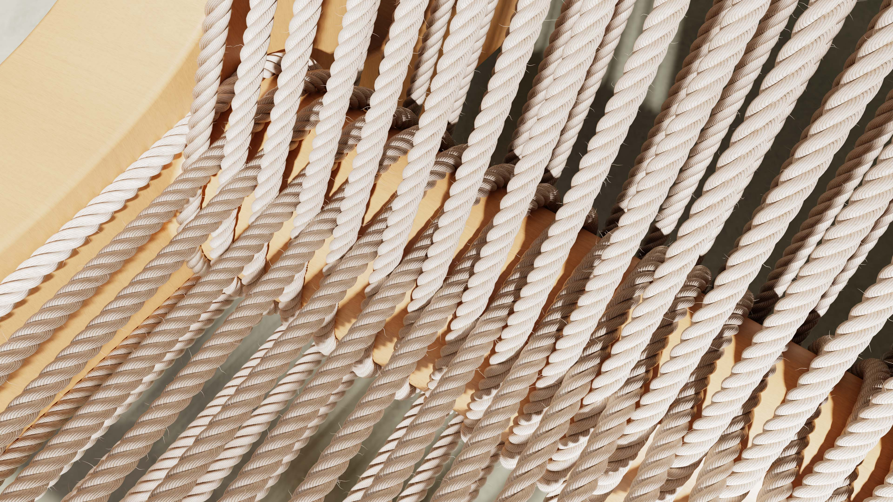
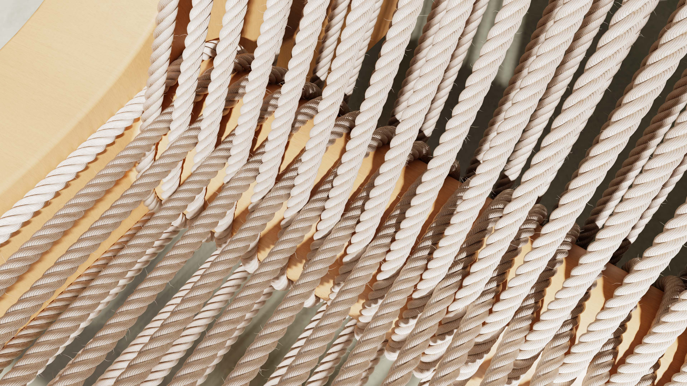

People are not Machines.
Minimalistic design has its place. It simplifies overly complex tasks in our day-to-day, helping us get from A to B. Many great designs we know today helped popularize this philosophy of minimalism and function driven form that strips everything down to it's essentials.
However, many products have started to look similar and uninspiring following the rising trend of minimalism. Products that blindly pursue the minimalist design language purely for minimalism's sake frequently sacrifice the emotional component of design.
Form and function are inseperable concepts; and form-giving is a crucial aspect of design.

Design trends change. Human nature doesnt.